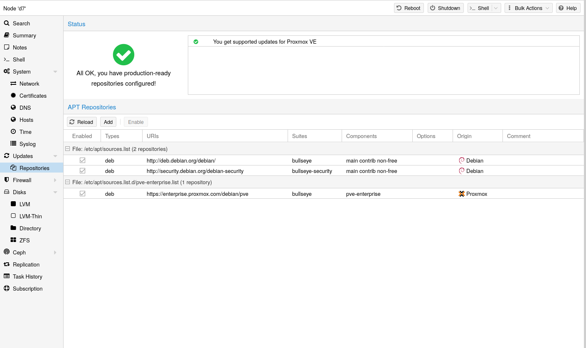

03 호스트 시스템 관리/운영#
Proxmox VE는 Debian GNU/Linux를 기반으로 하며, 추가 레포지토리를 통해 Proxmox VE 관련 패키지를 제공합니다. 즉, 보안 업데이트 및 버그 수정을 포함한 모든 범위의 Debian 패키지를 사용할 수 있습니다. Proxmox VE는 우분투 커널을 기반으로 하는 자체 Linux 커널을 제공합니다. 필요한 모든 가상화 및 컨테이너 기능이 활성화되어 있으며 ZFS 및 몇 가지 추가 하드웨어 드라이버가 포함되어 있습니다.
03-1 패키지 레포지토리#
Proxmox VE는 다른 Debian 기반 시스템과 마찬가지로 APT를 패키지 관리 도구로 사용합니다.
Proxmox VE는 매일 패키지 업데이트를 자동으로 확인합니다. root@pam 사용자는 사용 가능한 업데이트에 대해 이메일을 통해 알림을 받습니다. GUI에서 changelog버튼을 사용하여 선택한 업데이트에 대한 자세한 내용을 볼 수 있습니다.
03-1-1 Proxmox VE의 레포지토리#
레포지토리는 소프트웨어 패키지의 모음으로, 새 소프트웨어를 설치하는 데 사용할 수 있을 뿐만 아니라 새 업데이트를 받는 데도 중요합니다.
참고
최신 보안 업데이트, 버그 수정 및 새로운 기능을 받으려면 유효한 Debian 및 Proxmox 레포지토리가 필요합니다.
APT 레포지토리는 /etc/apt/sources.list 파일과 /etc/apt/sources.list.d/에 있는 .list 확장자 파일에 정의되어 있습니다.
[레포지토리 관리]

Proxmox VE 7부터는 웹 인터페이스에서 레포지토리 상태를 확인할 수 있습니다. 노드 요약 패널에는 개략적인 상태 개요가 표시되며, 별도의 Repository 패널에는 구성된 모든 레포지토리의 심층적인 상태와 목록이 표시됩니다.
레포지토리 활성화 또는 비활성화와 같은 기본적인 레포지토리 관리도 지원됩니다.
[sources.list 파일] sources.list 파일에서 각 줄은 패키지 레포지토리를 정의합니다.
선호하는 소스가 가장 먼저 나와야 하며, 빈 줄은 무시됩니다. # 문자는 해당 줄의 나머지 부분을 주석으로 표시합니다. 레포지토리에서 사용 가능한 패키지는 apt-get update 명령을 실행하여 얻습니다. 업데이트는 apt-get을 사용하여 직접 설치하거나, GUI(Node → Updates)를 통해 설치할 수 있습니다.
[/etc/apt/sources.list 파일]
deb http://deb.debian.org/debian bookworm main contrib
deb http://deb.debian.org/debian bookworm-updates main contrib
# security updates
deb
http://security.debian.org/debian-security bookworm-security main contrib
Proxmox VE는 세 가지 패키지 레포지토리를 제공합니다.
03-1-2 Proxmox VE Enterprise Repository#
이는 권장되는 저장소이며 모든 버트온 라이선스 구독자가 이용할 수 있습니다. 가장 안정적인 패키지가 포함되어 있으며 프로덕션 환경에 적합합니다. pve-enterprise 저장소는 기본적으로 활성화되어 있습니다:
pve-enterprise 저장소에 접근하려면 유효한 구독 키가 필요하다는 점에 유의하십시오. 당사는 다양한 지원 수준을 제공하며, 자세한 내용은 https://proxmox.com/en/proxmox-virtual-environment/pricing에서 확인하실 수 있습니다.
파일에서 줄 시작 부분에 ‘#’을 추가하여 주석 처리함으로써 이 저장소를 비활성화할 수 있습니다. 이렇게 하면 호스트에 구독 키가 없는 경우 오류 메시지가 표시되지 않습니다. 이 경우 pve-no-subscription 저장소를 구성하시기 바랍니다.
이 레포지토리는 권장 레포지토리이며 모든 Proxmox VE 구독 사용자가 사용할 수 있습니다. 가장 안정적인 패키지가 포함되어 있으며 프로덕션용으로 적합합니다. pve-enterprise 레포지토리는 기본적으로 활성화되어 있습니다:
[/etc/apt/sources.list.d/pve-enterprise.list 파일]
deb
https://enterprise.proxmox.com/debian/pve bookworm pve-enterprise
pve-enterprise 레포지토리에 액세스하려면 유효한 구독 키가 필요하다는 점에 유의하세요.
참고
위 줄의 첫 번째 줄에 **#**를 사용하여 주석을 달면 이 레포지토리를 비활성화할 수 있습니다. 이렇게 하면 호스트에 구독 키가 없는 경우 오류 메시지가 표시되지 않습니다. 이 경우 pve-no-subscription 레포지토리를 구성하세요.
03-1-3 Proxmox VE No-Subscription Repository#
이름에서 알 수 있듯이 이 레포지토리에 액세스하는 데는 구독 키가 필요하지 않습니다. 테스트 및 비프로덕션 용도로 사용할 수 있습니다. 이러한 패키지는 항상 철저한 테스트와 검증을 거치는 것은 아니므로 프로덕션 서버에서는 사용하지 않는 것이 좋습니다.
이 레포지토리는 /etc/apt/sources.list에서 구성하는 것이 좋습니다.
[/etc/apt/sources.list 파일]
deb http://ftp.debian.org/debian bookworm main contrib
deb http://ftp.debian.org/debian bookworm-updates main contrib
# Proxmox VE pve-no-subscription repository provided by proxmox.com,
# NOT recommended for production use
deb http://download.proxmox.com/debian/pve bookworm pve-no-subscription
# security updates
deb http://security.debian.org/debian-security bookworm-security main contrib
03-1-4 Proxmox VE Test Repository#
이 레지토리에는 최신 패키지가 포함되어 있으며 주로 개발자가 새로운 기능을 테스트하는 데 사용됩니다. 구성하려면 /etc/apt/sources.list에 다음 줄을 추가합니다:
[pvetest에 대한 sources.list 항목]
deb http://download.proxmox.com/debian/pve bookworm pvetest
경고
pvetest 레포지토리는 이름에서 알 수 있듯이 새로운 기능이나 버그 수정을 테스트하는 용도로만 사용해야 합니다.
03-1-5 Ceph Squid Enterprise Repository#
이 레지토리에는 엔터프라이즈용 Proxmox VE Ceph 19.2 Squid 패키지가 있습니다. 프로덕션에 적합합니다. Proxmox VE에서 Ceph 클라이언트 또는 전체 Ceph 클러스터를 실행하는 경우 이 레포지토리를 사용하세요.
[/etc/apt/sources.list.d/ceph.list 파일]
deb https://enterprise.proxmox.com/debian/ceph-squid bookworm enterprise
03-1-6 Ceph Squid No-Subscription Repository#
이 Ceph 레포지토리에는 엔터프라이즈 레포지토리로 이동하기 전과 테스트 레포지토리로 이동한 후의 Ceph 19.2 Squid 패키지가 포함되어 있습니다.
프로덕션 머신에는 엔터프라이즈 레포지토리를 사용하는 것이 좋습니다.
[/etc/apt/sources.list.d/ceph.list 파일]
deb http://download.proxmox.com/debian/ceph-squid bookworm no-subscription
03-1-7 Ceph Squid Test Repository#
이 Ceph 레포지토리에는 메인 레포지토리로 이동하기 전의 Ceph 19.2 Squid 패키지가 포함되어 있습니다. 이 레포지토리는 Proxmox VE에서 새로운 Ceph 릴리스를 테스트하는 데 사용됩니다.
[/etc/apt/sources.list.d/ceph.list 파일]
deb http://download.proxmox.com/debian/ceph-squid bookworm test
03-1-8 Ceph Reef Enterprise Repository#
이 레포지토리에는 엔터프라이즈용 Proxmox VE Ceph 18.2 Reef 패키지가 있습니다. 프로덕션에 적합합니다. 이 레포지토리는 Proxmox VE에서 Ceph 클라이언트 또는 전체 Ceph 클러스터를 실행하는 경우 사용합니다.
[/etc/apt/sources.list.d/ceph.list 파일]
deb https://enterprise.proxmox.com/debian/ceph-reef bookworm enterprise
03-1-9 Ceph Reef No-Subscription Repository#
이 Ceph 레포지토리에는 엔터프라이즈 레포지토리로 이동하기 전과 테스트 레포지토리로 이동한 후의 Ceph 18.2 Reef 패키지가 포함되어 있습니다.
프로덕션 머신에는 엔터프라이즈 레포지토리를 사용하는 것이 좋습니다.
[/etc/apt/sources.list.d/ceph.list 파일]
deb http://download.proxmox.com/debian/ceph-reef bookworm no-subscription
03-1-10 Ceph Reef Test Repository#
이 Ceph 레포지토리에는 메인 레포지토리로 이동하기 전의 Ceph 18.2 Reef 패키지가 포함되어 있습니다. 이 레포지토리는 Proxmox VE에서 새로운 Ceph 릴리스를 테스트하는 데 사용됩니다.
[/etc/apt/sources.list.d/ceph.list 파일]
deb http://download.proxmox.com/debian/ceph-reef bookworm test
03-2 시스템 소프트웨어 업데이트#
Proxmox는 모든 레포지토리에 대해 정기적으로 업데이트를 제공합니다. 업데이트를 설치하려면 웹 기반 GUI 또는 다음 CLI 명령을 사용하세요:
# apt-get update
# apt-get dist-upgrade
APT 패키지 관리 시스템은 매우 유연하며 많은 기능을 제공합니다.
최신 패치 및 보안 관련 수정 사항을 적용하려면 정기적인 업데이트가 필수입니다. 주요 시스템 업그레이드는 Proxmox VE 커뮤니티 포럼에서 발표됩니다.
03-3 펌웨어 업데이트#
펌웨어 업데이트는 베어메탈 서버에서 Proxmox VE를 실행할 때 적용해야 합니다. 디바이스 패스스루를 사용하는 경우와 같이 게스트 내에서 펌웨어 업데이트를 구성하는 것이 적절한지 여부는 설정에 따라 크게 달라지므로 본 문서의 범위를 벗어납니다.
펌웨어 업데이트는 정기적인 소프트웨어 업데이트와 더불어 안정적이고 안전한 운영을 위해서도 중요합니다.
펌웨어 업데이트를 받아 적용할 때는 가능한 한 빨리 또는 전혀 받지 않도록 사용 가능한 옵션을 조합하여 적용하는 것이 좋습니다.
펌웨어라는 용어는 일반적으로 언어학적으로 마이크로코드(CPU용)와 펌웨어(기타 장치용)로 나뉩니다.
03-3-1 영구 펌웨어#
이 섹션은 모든 장치에 적합합니다. 일반적으로 BIOS/UEFI 업데이트에 포함된 업데이트된 마이크로코드는 마더보드에 저장되는 반면, 다른 펌웨어는 각 장치에 저장됩니다. 이 영구적인 방법은 부팅 시 업데이트된 마이크로코드를 최대한 빨리 정기적으로 로드할 수 있기 때문에 CPU에 특히 중요합니다.
이는 모든 디바이스에 적용됩니다. 일반적으로 BIOS/UEFI 업데이트에 포함되는 업데이트된 마이크로코드는 마더보드에 저장되며, 다른 펌웨어는 해당 디바이스에 저장됩니다. 이 영구적인 방식은 특히 CPU에 중요한데, 부팅 시 가능한 한 빨리 업데이트된 마이크로코드를 정기적으로 로드할 수 있기 때문입니다.
사용 가능한 업데이트 방법은 하드웨어 벤더에 문의하여 확인하시기 바랍니다.
서버의 경우 편리한 업데이트 방법으로는 다음과 같은 옵션이 있습니다:
Dell의 Lifecycle Manager
HPE의 Service Pack 일부 하드웨어의 경우 Linux용 유틸리티도 제공됩니다:
NVIDIA ConnectX 카드: mlxup
Broadcom 네트워크 카드: bnxtnvm 또는 niccli LVFS(Linux Vendor Firmware Service)도 하나의 옵션입니다. 단, 다음 조건을 충족해야 합니다:
하드웨어 벤더와의 협력 관계가 있어야 함
지원되는 하드웨어를 사용해야 함
시스템이 2014년 이후에 제조되었어야 함
UEFI를 통해 부팅되어야 함 이러한 방법들을 통해 펌웨어를 안전하고 효율적으로 업데이트할 수 있습니다.
버트온은 자체 서명 키를 사용한 보안 부팅 지원을 위해 자체 버전의 fwupd 패키지를 제공합니다. 이 패키지는 하이퍼바이저에서 udisks2 패키지 사용 시 발생하는 문제로 인해 의도적으로 udisks2에 대한 의존성 권장을 제거했습니다. 따라서 /etc/fwupd/daemon.conf 파일에서 EFI 파티션의 올바른 마운트 포인트를 명시적으로 구성해야 합니다. 예를 들면 다음과 같습니다:
[fwupd]
EspLocation=/boot/efi
이렇게 설정함으로써 fwupd가 EFI 시스템 파티션의 위치를 정확히 인식할 수 있게 됩니다. 이는 펌웨어 업데이트 프로세스가 올바르게 작동하는 데 필수적입니다.
03-3-2 런타임 펌웨어 파일#
03-4 네트워크 구성#
버트온은 Linux 네트워크 스택을 사용합니다. 이를 통해 노드에서 유연하게 네트워크를 설정할 수 있습니다. 설정은 GUI를 통해 수행하거나 전체 네트워크 구성이 포함된 /etc/network/interfaces 파일을 직접 편집하여 수행할 수 있습니다. 전체 형식 설명은 interfaces(5) 매뉴얼 페이지에서 확인할 수 있습니다. 모든 버트온 관리 도구는 사용자의 직접적인 수정 사항을 유지하려고 노력하지만, 오류를 방지하기 위해 GUI 사용을 권장합니다.
GuestOS를 기본 물리 네트워크에 연결하려면 Linux 브릿지 인터페이스(일반적으로 vmbrX라고 함)가 필요합니다. 이는 GuestOS와 물리 인터페이스가 연결되는 가상 스위치로 생각할 수 있습니다. 이 섹션에서는 bond를 통한 이중화, VLAN 또는 라우팅및 NAT 설정과 같은 다양한 사용 사례에 맞게 네트워크를 설정하는 방법에 대한 예시를 제공합니다.
**소프트웨어 정의 네트워크(SDN)**는 버트온 클러스터에서 더 복잡한 가상 네트워크를 구성하기 위한 옵션입니다.
기본 Debian 도구인
ifup및ifdown사용은 권장되지 않습니다. 이러한 도구들은ifdown vmbrX실행 시 모든 게스트 트래픽을 중단시키고, 이후 동일한 브릿지에서ifup을 실행해도 게스트 연결을 복구하지 않는 등의 문제점이 있습니다.
03-4-1 네트워크 변경 사항 적용#
버트온은 변경 사항을 /etc/network/interfaces 파일에 직접 작성하지 않습니다. 대신 /etc/network/interfaces.new라는 임시 파일에 작성합니다. 이를 통해 여러 관련 변경 사항을 한 번에 수행할 수 있습니다. 또한 잘못된 네트워크 구성으로 인해 노드에 접근할 수 없게 되는 상황을 방지하기 위해, 최종적으로 변경 사항이 올바른지 확인할 수 있습니다.
ifupdown2를 사용한 네트워크 실시간 재 적용
권장되는 ifupdown2 패키지(Proxmox VE 7.0 이후 새 설치의 기본값)를 사용하면 재부팅 없이 네트워크 구성 변경 사항을 적용할 수 있습니다. GUI를 통해 네트워크 구성을 변경한 경우, Apply Configuration 버튼을 클릭하면 됩니다. 이 작업은 interfaces.new 임시 파일의 변경 사항을 /etc/network/interfaces로 이동시키고 실시간으로 적용합니다.
/etc/network/interfaces 파일을 직접 수동으로 변경한 경우, ifreload -a를 실행하여 적용할 수 있습니다.
03-4-2 명명 규칙#
현재 다음과 같은 디바이스 이름 명명 규칙을 사용하고 있습니다:
이더넷 장치:
en*systemd 네트워크 인터페이스 이름
이 명명 체계는 버트온 5.0 이후 버전에서 사용됩니다.
이더넷 장치:
eth[N]0 ≤ N (
eth0, eth1, …)이 명명 체계는 버트온 5.0 이전 버전에서 사용됩니다. 5.0 이상 버전으로 업그레이드 시 장치 이름은 그대로 유지됩니다.
브릿지 이름: 일반적으로
vmbr[N]0 ≤ N ≤ 4094 (
vmbr0 - vmbr4094)문자로 시작하고 최대 10자 길이의 영숫자 문자열도 사용 가능합니다.
본드:
bond[N]0 ≤ N (
bond0, bond1,…)
VLAN: 장치 이름에 마침표(.)로 구분된 VLAN 번호를 추가합니다 (ex:
eno1.50, bond1.30)
이러한 명명 규칙은 장치 이름이 장치 유형을 암시하므로 네트워크 문제를 디버깅하기 쉽게 만듭니다.
Systemd 네트워크 인터페이스 이름
Systemd는 네트워크 장치 이름에 대한 버전 관리 명명 체계를 정의합니다. 이 체계는 이더넷 네트워크 장치에 대해 en이라는 두 글자 접두사를 사용합니다. 다음 문자는 장치 드라이버, 장치 위치 및 기타 속성에 따라 달라집니다. 가능한 패턴은 다음과 같습니다:
o<index>[n<phys_port_name>|d<dev_port>]: 온보드(on-board) 장치s<slot>[f<function>][n<phys_port_name>|d<dev_port>]: 핫플러그 ID 기반 장치[P<domain>]p<bus>s<slot>[f<function>][n<phys_port_name>|d<dev_port>]: 버스 ID 기반 장치x<MAC>: MAC 주소 기반 장치
[주요 구성 요소 설명]
index: 장치의 인덱스 번호phys_port_name: 물리적 포트 이름dev_port: 장치 포트 번호slot: PCI 슬롯 번호function: PCI 기능 번호domain: PCI 도메인bus: PCI 버스 번호MAC: 장치의 MAC 주소
네트워크 인터페이스 명명 규칙은 다음과 같은 일반적인 패턴을 사용합니다:
eno1— 첫 번째 온보드 NIC(Network Interface Card)enp3s0f1— PCI 버스 3, 슬롯 0의 NIC의 함수 1 이러한 명명 규칙은 하드웨어 위치와 특성을 기반으로 하여 일관성 있고 예측 가능한 이름을 제공합니다.
새로운 systemd 버전은 새로운 네트워크 인터페이스 명명 체계를 정의할 수 있으며, 이는 기본적으로 사용됩니다. 따라서 버트온 주요 업그레이드와 같은 상황에서 systemd를 새 버전으로 업데이트하면 네트워크 디바이스의 이름이 변경될 수 있으며, 네트워크 구성을 조정해야 할 수 있습니다.
명명 체계 버전을 수동으로 고정하여 새 버전으로 인한 이름 변경을 방지할 수 있습니다. 그러나 명명 체계 버전을 고정해도 커널이나 드라이버 업데이트로 인해 네트워크 인터페이스 이름이 여전히 변경될 수 있습니다
특정 네트워크 장치의 이름 변경을 완전히 방지하려면 링크 파일을 사용하여 수동으로 이름을 재정의할 수 있습니다. 이 방법을 통해 장치에 고정된 이름을 지정할 수 있습니다
특정 명명 체계 버전 고정하기
네트워크 장치 이름 재정의하기
03-4-3 네트워크 구성 선택하기#
현재 네트워크 구성과 리소스에 따라 브릿지, 라우팅 또는 마스커레이딩 네트워킹 설정 중에서 선택할 수 있습니다.
외부 게이트웨이를 통해 인터넷에 연결되는 사설 LAN의 버트온 서버
이 경우 브릿지(Bridged) 모델이 가장 적합하며, 이는 버트온 첫 설치의 기본 모드이기도 합니다. 각 GuestOS은 버트온 브릿지에 연결된 가상 인터페이스를 갖게 됩니다. 이는 게스트 네트워크 카드가 LAN의 새 스위치에 직접 연결된 것과 유사한 효과를 나타내며, 버트온 호스트가 스위치 역할을 수행합니다.
게스트를 위한 공용 IP 범위가 있는 호스팅 제공업체의 버트온 서버
이 설정에서는 제공업체가 허용하는 것에 따라 브릿지(Bridged) 또는 라우팅(Routed) 모델을 사용할 수 있습니다.
단일 공용 IP 주소가 있는 호스팅 제공업체의 버트온 서버
이 경우 게스트 시스템에 대한 나가는 네트워크 액세스를 얻는 유일한 방법은 마스커레이딩을 사용하는 것입니다. 게스트에 대한 들어오는 네트워크 액세스의 경우 포트 포워딩을 구성해야 합니다.
추가 유연성을 위해 VLAN(IEEE 802.1q) 및 “링크 집계”라고도 알려진 네트워크 본딩을 구성할 수 있습니다. 이렇게 하면 복잡하고 유연한 가상 네트워크를 구축할 수 있습니다.
3.4.4 브릿지를 사용한 기본 구성#
브릿지는 소프트웨어로 구현된 물리적 네트워크 스위치와 같습니다. 모든 가상 게스트는 단일 브릿지를 공유하거나 네트워크 도메인을 분리하기 위해 여러 브릿지를 생성할 수 있습니다. 각 호스트는 최대 4094개의 브릿지를 가질 수 있습니다.
설치 프로그램은 첫 번째 이더넷 카드에 연결된 vmbr0이라는 단일 브릿지를 생성합니다. /etc/network/interfaces의 해당 구성은 다음과 같을 수 있습니다:
auto lo
iface lo inet loopback
iface eno1 inet manual
auto vmbr0
iface vmbr0 inet static
address 192.168.10.2/24
gateway 192.168.10.1
bridge-ports eno1
bridge-stp off
bridge-fd 0
가상 머신은 물리적 네트워크에 직접 연결된 것처럼 작동합니다. 반면 네트워크는 이러한 모든 VM을 네트워크에 연결하는 네트워크 케이블이 하나만 있더라도 각 가상 머신이 자체 MAC을 가지고 있는 것처럼 인식합니다.